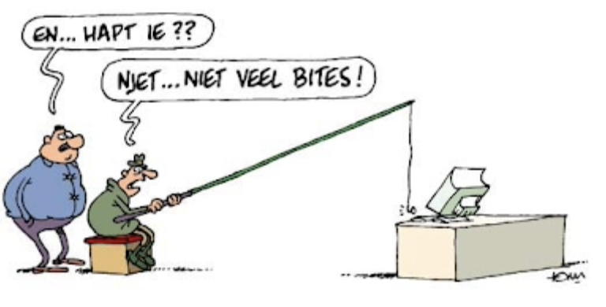

De CPU en het RAM vallen onder de kernapparatuur van een computer. Alle andere hardware wordt ook wel de randapparatuur genoemd. Voorbeelden zijn het beeldscherm, de muis en het toetsenbord. Het beheer van de randapparatuur wordt gedaan door het besturingssysteem met behulp van drivers.
Een driver is software die het besturingssysteem alle informatie geeft die het nodig heeft om een hardware-onderdeel aan te sturen. Hierdoor hoeft een besturingssysteem geen kennis te hebben van alle losse hardware onderdelen.
